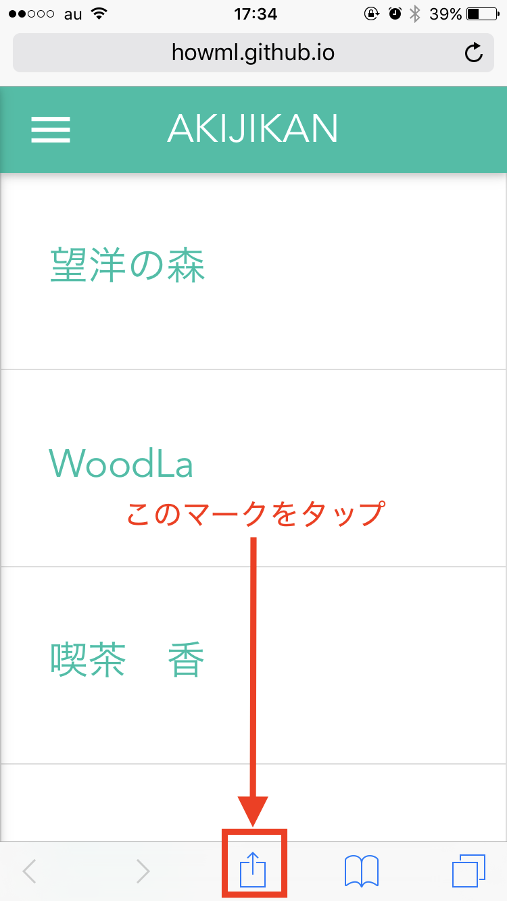

ホーム画面に追加してみよう!!
アキジカンを見るのに、毎回検索しますか？アキジカンをホーム画面に追加すると、お使い中のスマートフォン等のホーム画面から、すぐにアキジカンへアクセスできるので、なまら（すごく）便利です!!
その1

iPhoneでSafariを利用していることを前提ですが、アキジカンを表示させて、画面下部にある「共有マーク」をタップします。
その2

「共有マーク」をタップすると、下からにゅっとたくさんアイコンがでてきますが、その中の「ホーム画面に追加」をタップします。
その3

そうすると、ホーム画面に表示されるかわいらしいアキジカンアイコンが表示されるので、右上にある「追加」をタップします。
なお、ホームに表示される名前などを変更したい場合にはここで名前の変更してください。
その4

これでホーム画面にその他のアプリと同じようにアイコンが表示されました。次回からはこれをタップしてくださいね！